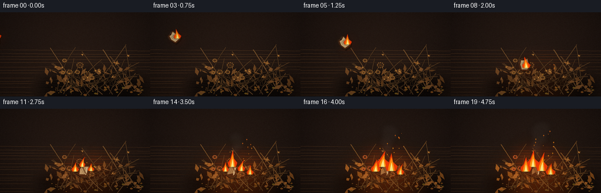
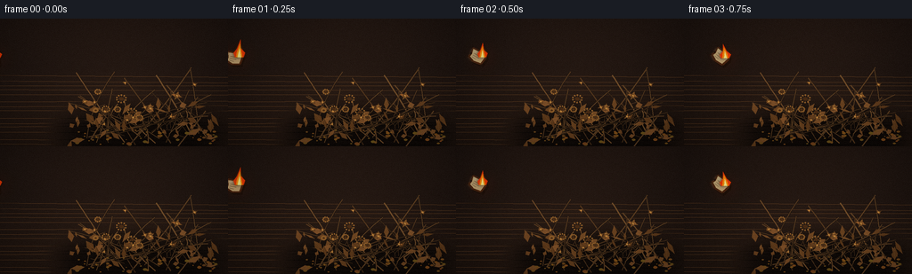

CODING AGENTS AS PIXEL WORLD MODELS
traex/GPT-5.6-Sol · material_0028
点击播放 · 原生 RGB 像素
逐轮保存的候选
回放视频、检查图与代码变化。
每份候选均可单独播放。实际图片检查记录在下方工具轨迹中。
候选 01播放与检查图
点击播放 · 原生 RGB 像素


展开代码变化
--- 上一保存版本
+++ 本次保存版本
@@ -0,0 +1,332 @@
+from pathlib import Path
+import math, random
+import numpy as np
+from PIL import Image, ImageDraw, ImageFilter
+import artifact_io
+
+# Procedural, deterministic text-to-video renderer.
+W, H, N, FPS = 256, 144, 20, 4.0
+SS = 3
+CW, CH = W*SS, H*SS
+TAU = math.tau
+
+def sc(v): return int(round(v*SS))
+def pts(seq): return [(sc(x), sc(y)) for x,y in seq]
+def rgba_layer(): return Image.new('RGBA', (CW, CH), (0,0,0,0))
+def clamp(v,a=0,b=255): return max(a,min(b,int(v)))
+
+def smoothstep(a,b,x):
+ if a == b: return 1.0 if x >= b else 0.0
+ z=max(0.0,min(1.0,(x-a)/(b-a)))
+ return z*z*(3-2*z)
+
+def qbez(p0,p1,p2,n=18):
+ out=[]
+ for i in range(n):
+ t=i/(n-1); u=1-t
+ out.append((u*u*p0[0]+2*u*t*p1[0]+t*t*p2[0], u*u*p0[1]+2*u*t*p1[1]+t*t*p2[1]))
+ return out
+
+def poly_rot(poly, cx,cy, ang, scale=1.0):
+ co,si=math.cos(ang),math.sin(ang)
+ return [(cx+(x*co-y*si)*scale, cy+(x*si+y*co)*scale) for x,y in poly]
+
+# Stable natural geometry.
+rng=random.Random(80421)
+stems=[]
+for i in range(36):
+ bx=rng.uniform(93,238); by=rng.uniform(124,145)
+ ex=rng.uniform(75,241); ey=rng.uniform(54,113)
+ bend=rng.uniform(-16,16)
+ cx=(bx+ex)/2+bend; cy=(by+ey)/2+rng.uniform(-7,7)
+ stems.append((bx,by,cx,cy,ex,ey,rng.uniform(.45,1.25),rng.random()))
+
+flowers=[]
+for i in range(20):
+ x=rng.uniform(89,233); y=rng.uniform(69,119)
+ r=rng.uniform(3.0,7.4); petals=rng.choice([5,6,7,8])
+ flowers.append((x,y,r,petals,rng.uniform(0,TAU),rng.choice([0,0,1,1,2]),rng.random()))
+
+leaves=[]
+for i in range(52):
+ x=rng.uniform(78,244); y=rng.uniform(93,139)
+ length=rng.uniform(5,17); width=rng.uniform(1.2,4.3); ang=rng.uniform(-math.pi,math.pi)
+ leaves.append((x,y,length,width,ang,rng.random()))
+
+# tabletop/background made once at supersampled resolution
+Y,X=np.mgrid[0:CH,0:CW]
+xf=X/SS; yf=Y/SS
+rad=np.sqrt(((xf-136)/180)**2+((yf-83)/110)**2)
+base=np.zeros((CH,CW,3),dtype=np.float32)
+base[:,:,0]=29 + 17*(1-yf/H) - 12*rad
+base[:,:,1]=20 + 11*(1-yf/H) - 8*rad
+base[:,:,2]=16 + 7*(1-yf/H) - 5*rad
+# softly illuminated brown table plane
+plane=smoothstep(0,1,1) if False else np.clip((yf-55)/80,0,1)
+base[:,:,0]+=plane*12; base[:,:,1]+=plane*7; base[:,:,2]+=plane*3
+noise=np.random.default_rng(991).normal(0,1.45,(CH,CW,1))
+base+=noise
+base=np.uint8(np.clip(base,0,255))
+BACKGROUND=Image.fromarray(base,'RGB').convert('RGBA')
+# subtle wood grain lines
+bgd=ImageDraw.Draw(BACKGROUND,'RGBA')
+for j in range(14):
+ yy=sc(63+j*6+rng.uniform(-1.5,1.5))
+ bgd.line([(0,yy),(CW,yy+sc(rng.uniform(-2,2)))],fill=(104,66,35,10),width=sc(.35))
+
+
+def draw_shadow(img):
+ lay=rgba_layer(); d=ImageDraw.Draw(lay,'RGBA')
+ d.ellipse((sc(67),sc(103),sc(250),sc(153)),fill=(0,0,0,150))
+ lay=lay.filter(ImageFilter.GaussianBlur(sc(9)))
+ img.alpha_composite(lay)
+
+
+def draw_stem(d,s, bright=0):
+ bx,by,cx,cy,ex,ey,w,tone=s
+ col=(clamp(82+tone*40+bright),clamp(54+tone*29+bright*.52),clamp(29+tone*16),235)
+ curve=qbez((bx,by),(cx,cy),(ex,ey),20)
+ d.line(pts(curve),fill=(32,22,13,125),width=max(1,sc(w+0.9)),joint='curve')
+ d.line(pts(curve),fill=col,width=max(1,sc(w)),joint='curve')
+ # tiny brittle branches near tip
+ if tone>.23:
+ for side in (-1,1):
+ t=.27+.13*(side+1)
+ px=(1-t)**2*bx+2*(1-t)*t*cx+t*t*ex
+ py=(1-t)**2*by+2*(1-t)*t*cy+t*t*ey
+ vx=ex-px; vy=ey-py; L=math.hypot(vx,vy)+1e-5
+ nx=-vy/L*side; ny=vx/L*side
+ q=(px+nx*(4+tone*4)-vx/L*2,py+ny*(4+tone*4)-vy/L*2)
+ d.line(pts([(px,py),q]),fill=col,width=max(1,sc(w*.55)))
+
+
+def draw_leaf(d,leaf, light=0):
+ x,y,L,ww,a,t=leaf
+ co,si=math.cos(a),math.sin(a); nx=-si; ny=co
+ tip=(x+co*L,y+si*L)
+ p=[(x,y),(x+co*L*.44+nx*ww,y+si*L*.44+ny*ww),tip,
+ (x+co*L*.45-nx*ww*.72,y+si*L*.45-ny*ww*.72)]
+ c=(clamp(91+45*t+light),clamp(55+31*t+light*.46),clamp(24+19*t),230)
+ d.polygon(pts(p),fill=c)
+ d.line(pts([(x,y),tip]),fill=(179+clamp(light*.35,0,50),121,61,135),width=max(1,sc(.35)))
+ # chipped dark tip
+ if t>.72: d.ellipse((sc(tip[0]-.7),sc(tip[1]-.7),sc(tip[0]+.7),sc(tip[1]+.7)),fill=(49,31,17,190))
+
+
+def draw_flower(d,f, light=0):
+ x,y,r,npets,a,kind,t=f
+ # stem-visible dark under-head
+ if kind==2: # round seedhead
+ for k in range(npets+3):
+ aa=a+k*TAU/(npets+3)
+ px=x+math.cos(aa)*r*.72; py=y+math.sin(aa)*r*.58
+ d.line(pts([(x,y),(px,py)]),fill=(114,75,34,230),width=max(1,sc(.45)))
+ d.ellipse((sc(px-.75),sc(py-.75),sc(px+.75),sc(py+.75)),fill=(clamp(145+light),95,42,240))
+ d.ellipse((sc(x-r*.28),sc(y-r*.22),sc(x+r*.28),sc(y+r*.22)),fill=(73,43,20,255))
+ return
+ for k in range(npets):
+ aa=a+k*TAU/npets + .12*math.sin(k*2.7+t*4)
+ rr=r*(.76+.25*math.sin(k*3.1+t*5))
+ cx=x+math.cos(aa)*rr*.48; cy=y+math.sin(aa)*rr*.38
+ pw=r*.39; ph=r*(.68 if kind==0 else .48)
+ # petal is an irregular tapered diamond aligned radially
+ nx=-math.sin(aa); ny=math.cos(aa); ux=math.cos(aa); uy=math.sin(aa)
+ p=[(x+ux*r*.10,y+uy*r*.08),(cx+nx*pw*.45,cy+ny*pw*.45),
+ (x+ux*rr,y+uy*rr*.76),(cx-nx*pw*.42,cy-ny*pw*.42)]
+ shade=22*math.sin(k*1.9+t*3)
+ col=(clamp(143+shade+light),clamp(91+shade*.5+light*.42),clamp(42+shade*.18),235)
+ d.polygon(pts(p),fill=col)
+ d.line(pts([p[1],p[2],p[3]]),fill=(80,48,22,135),width=max(1,sc(.28)))
+ d.ellipse((sc(x-r*.23),sc(y-r*.20),sc(x+r*.23),sc(y+r*.20)),fill=(77,44,19,255))
+ for k in range(4):
+ aa=a+k*1.55
+ xx=x+math.cos(aa)*r*.12; yy=y+math.sin(aa)*r*.10
+ d.ellipse((sc(xx-.45),sc(yy-.45),sc(xx+.45),sc(yy+.45)),fill=(207,146,67,230))
+
+
+def fire_level(frame):
+ return smoothstep(8.0,18.0,frame)
+
+
+def draw_pile(img, frame, foreground=False):
+ light=fire_level(frame)*70
+ lay=rgba_layer(); d=ImageDraw.Draw(lay,'RGBA')
+ if not foreground:
+ # tangled stems behind leaves and flower heads
+ for s in sorted(stems,key=lambda z:z[5]): draw_stem(d,s,light*.32)
+ for leaf in sorted(leaves,key=lambda z:z[1]): draw_leaf(d,leaf, light*(1-max(0,min(1,(leaf[0]-95)/130))*.3))
+ for f in sorted(flowers,key=lambda z:z[1]): draw_flower(d,f,light*(.35+.65*smoothstep(230,100,f[0])))
+ # crumbly detached petals on tabletop
+ rr=random.Random(221)
+ for i in range(45):
+ x=rr.uniform(80,247); y=rr.uniform(124,142); r=rr.uniform(.35,1.4)
+ d.ellipse((sc(x-r*1.8),sc(y-r),sc(x+r*1.8),sc(y+r)),fill=(134+rr.randrange(35),83+rr.randrange(25),33,180))
+ else:
+ # Several foreground blades occlude landed paper, selling contact with pile.
+ for leaf in leaves[9:22:2]:
+ if leaf[1]>110: draw_leaf(d,leaf,light*.7)
+ for s in stems[25:31]: draw_stem(d,s,light*.5)
+ img.alpha_composite(lay)
+
+
+def paper_pose(fr):
+ if fr <= 9:
+ t=fr/9.0
+ # strong thrown arc, decelerating slightly before impact
+ x=-10 + 153*t
+ y=47 + 58*t - 28*math.sin(math.pi*t)
+ ang=math.radians(-13 + 118*t + 16*math.sin(t*TAU))
+ scale=.76 + .13*t
+ else:
+ t=fr-9
+ x=143 + 4.8*(1-math.exp(-t*.38))*math.cos(t*.72)
+ y=105.0 + 1.7*(1-math.exp(-t*.6))
+ ang=math.radians(105 + 8*math.exp(-t*.27)*math.sin(t*1.5))
+ scale=.89
+ return x,y,ang,scale
+
+PAPER=[(-12,-8),(9,-9),(13,-4),(11,9),(-2,11),(-12,7),(-10,1)]
+
+def draw_paper_shape(layer, x,y,ang,scale, opacity=255, blur=0, fr=0, trail=False):
+ d=ImageDraw.Draw(layer,'RGBA')
+ p=poly_rot(PAPER,x,y,ang,scale)
+ # contact shadow
+ if not trail:
+ sh=[(px+1.7,py+2.3) for px,py in p]
+ d.polygon(pts(sh),fill=(18,10,5,min(150,opacity)))
+ # burnt edge expands after contact
+ burn=smoothstep(7,19,fr)
+ d.polygon(pts(p),fill=(74,39,18,opacity))
+ innerbase=[(-10,-6),(6.5,-7),(10,-3),(8.5,7),(-1,8.5),(-9,5.5),(-8,1)]
+ # right/top burning corner bites inward over time
+ if burn>.2:
+ innerbase[1]=(5-4*burn,-6+2*burn); innerbase[2]=(8-5*burn,-2+4*burn)
+ q=poly_rot(innerbase,x,y,ang,scale)
+ d.polygon(pts(q),fill=(clamp(202-45*burn),clamp(177-66*burn),clamp(126-66*burn),opacity))
+ # fold highlight
+ fold=poly_rot([(-8,-5),(5,-6),(7,-4),(-7,-2)],x,y,ang,scale)
+ d.polygon(pts(fold),fill=(236,215,165,max(0,opacity-35)))
+ # handwriting-like marks fixed to paper
+ for yy,ln in [(-1,11),(2,9),(5,6)]:
+ a=poly_rot([(-6,yy),(-6+ln,yy+.35)],x,y,ang,scale)
+ d.line(pts(a),fill=(72,56,40,max(0,opacity-65)),width=max(1,sc(.45)))
+ # charred uneven rim spots
+ for k in range(9):
+ z=(k/9)*len(p); j=int(z)%len(p); xx,yy=p[j]
+ rr=.4+(k%3)*.25
+ d.ellipse((sc(xx-rr),sc(yy-rr),sc(xx+rr),sc(yy+rr)),fill=(29,18,11,min(opacity,220)))
+ if blur: return layer.filter(ImageFilter.GaussianBlur(sc(blur)))
+ return layer
+
+
+def draw_flame(img, fr, x,y,ang,scale):
+ # flame roots on leading paper corner until impact; upward in world coordinates.
+ landed=fr>=9
+ grow=fire_level(fr)
+ if landed: rootx,rooty=140,99
+ else:
+ co,si=math.cos(ang),math.sin(ang)
+ rootx=x+(7*co+2*si)*scale; rooty=y+(7*si-2*co)*scale
+ intensity=.55+1.05*grow
+ # diffuse reflected light / halo
+ halo=rgba_layer(); hd=ImageDraw.Draw(halo,'RGBA')
+ hr=13+grow*26
+ hd.ellipse((sc(rootx-hr),sc(rooty-hr),sc(rootx+hr),sc(rooty+hr)),fill=(255,77,8,int(72+35*grow)))
+ if landed:
+ hd.ellipse((sc(92),sc(72),sc(205),sc(139)),fill=(255,78,5,int(15+28*grow)))
+ halo=halo.filter(ImageFilter.GaussianBlur(sc(12+grow*7)))
+ img.alpha_composite(halo)
+
+ flame=rgba_layer(); d=ImageDraw.Draw(flame,'RGBA')
+ roots=[(rootx,rooty)]
+ if landed and grow>.14: roots += [(rootx+15,rooty+7),(rootx-12,rooty+8)]
+ if landed and grow>.58: roots += [(rootx+30,rooty+13)]
+ for j,(rx,ry) in enumerate(roots):
+ local=max(.25,grow-(j*.17)) if landed else .36
+ h=(9+local*24)*(1+.14*math.sin(fr*1.9+j*2.4))
+ wid=(3.7+local*7.5)*(1+.12*math.cos(fr*1.5+j))
+ lean=2.5*math.sin(fr*1.31+j*2.1) + (2 if landed else -1)
+ outer=[(rx-wid*.78,ry),(rx-wid,ry-h*.24),(rx-wid*.42,ry-h*.49),
+ (rx+lean,ry-h),(rx+wid*.24,ry-h*.51),(rx+wid,ry-h*.25),(rx+wid*.72,ry)]
+ d.polygon(pts(outer),fill=(242,58,5,240))
+ middle=[(rx-wid*.56,ry),(rx-wid*.48,ry-h*.25),(rx+lean*.55,ry-h*.76),
+ (rx+wid*.38,ry-h*.26),(rx+wid*.52,ry)]
+ d.polygon(pts(middle),fill=(255,142,12,252))
+ inner=[(rx-wid*.28,ry),(rx-wid*.18,ry-h*.18),(rx+lean*.28,ry-h*.48),(rx+wid*.27,ry)]
+ d.polygon(pts(inner),fill=(255,235,132,255))
+ # slight luminous fringe, then crisp core
+ blurred=flame.filter(ImageFilter.GaussianBlur(sc(1.7)))
+ img.alpha_composite(blurred)
+ img.alpha_composite(flame)
+
+
+def draw_smoke_and_sparks(img,fr,x,y):
+ grow=fire_level(fr)
+ count=2+int(8*grow)
+ smoke=rgba_layer(); d=ImageDraw.Draw(smoke,'RGBA')
+ for i in range(count):
+ age=(i+.35)/max(1,count)
+ yy=(y-8) - age*(18+44*grow)
+ xx=x+age*(3+12*grow)+4*math.sin(fr*.52+i*1.73)
+ rr=2.2+age*(4+8*grow)
+ alpha=int((45+54*grow)*(1-age*.62))
+ d.ellipse((sc(xx-rr*1.2),sc(yy-rr),sc(xx+rr*1.2),sc(yy+rr)),fill=(69,66,61,alpha))
+ smoke=smoke.filter(ImageFilter.GaussianBlur(sc(4.2)))
+ img.alpha_composite(smoke)
+ # glowing airborne embers after impact
+ if fr>=8:
+ sp=rgba_layer(); sd=ImageDraw.Draw(sp,'RGBA'); rrng=random.Random(1200+fr)
+ for i in range(4+int(grow*13)):
+ age=rrng.random(); sx=139+rrng.uniform(-10,32)+age*8
+ sy=104-age*(15+52*grow)+rrng.uniform(-4,4)
+ r=rrng.uniform(.25,.75)*(1+.3*grow)
+ sd.ellipse((sc(sx-r),sc(sy-r),sc(sx+r),sc(sy+r)),fill=(255,clamp(113+100*(1-age)),25,220))
+ if r>.55: sd.line(pts([(sx,sy+3),(sx,sy)]),fill=(255,98,15,100),width=max(1,sc(.3)))
+ img.alpha_composite(sp)
+
+
+def render(fr):
+ img=BACKGROUND.copy()
+ draw_shadow(img)
+ # firelight under the subjects must tint them naturally
+ if fr>=8:
+ g=fire_level(fr)
+ gl=rgba_layer(); gd=ImageDraw.Draw(gl,'RGBA')
+ gd.ellipse((sc(74),sc(72),sc(225),sc(157)),fill=(255,91,10,int(20+42*g)))
+ gl=gl.filter(ImageFilter.GaussianBlur(sc(22)))
+ img.alpha_composite(gl)
+ draw_pile(img,fr,False)
+ x,y,a,z=paper_pose(fr)
+ # short directional motion smear while airborne
+ if 1<=fr<=8:
+ px,py,pa,pz=paper_pose(fr-1)
+ for k in range(2):
+ t=(k+1)/3
+ mx=x*(1-t*.27)+px*t*.27; my=y*(1-t*.27)+py*t*.27
+ lay=rgba_layer(); lay=draw_paper_shape(lay,mx,my,a,z,opacity=34,blur=.8,fr=fr,trail=True)
+ img.alpha_composite(lay)
+ paper=rgba_layer(); paper=draw_paper_shape(paper,x,y,a,z,opacity=255,fr=fr)
+ img.alpha_composite(paper)
+ if fr>=9: draw_pile(img,fr,True)
+ # smoke behind flame but over scene
+ sx,sy=(140,99) if fr>=9 else (x,y)
+ draw_smoke_and_sparks(img,fr,sx,sy)
+ draw_flame(img,fr,x,y,a,z)
+ # cinematic vignette and warm contrast at final resolution
+ img=img.convert('RGB').resize((W,H),Image.Resampling.LANCZOS)
+ arr=np.asarray(img).astype(np.float32)
+ yy,xx=np.mgrid[0:H,0:W]
+ vign=1-.34*np.clip(((xx-W*.5)/(W*.7))**2+((yy-H*.5)/(H*.72))**2,0,1)
+ arr*=vign[:,:,None]
+ # subtle film grain, frame-varying but low amplitude
+ gr=np.random.default_rng(7000+fr).normal(0,1.0,(H,W,1))
+ arr+=gr
+ return np.uint8(np.clip(arr,0,255))
+
+
+def main():
+ frames=np.stack([render(i) for i in range(N)],axis=0)
+ artifact_io.save(frames,Path(__file__).resolve().parent)
+ print('saved',frames.shape,frames.dtype,'range',int(frames.min()),int(frames.max()))
+
+if __name__=='__main__': main()
可观测工具轨迹
实际执行的命令与返回图片。
命令 1exit 0
/bin/bash -lc "cat prompt.txt && printf '\\n--- GENERATION_RULES.md ---\\n' && cat GENERATION_RULES.md"
命令 2exit 0
/bin/bash -lc "cat task_spec.json && printf '\\n--- files ---\\n' && find . -maxdepth 2 -type f -printf '%p\\n' | sort"
命令 3exit 0
/bin/bash -lc "command -v ffmpeg || true; command -v convert || true; python3 - <<'PY' mods=['PIL','numpy','cv2','imageio','cairo','moviepy'] for m in mods: try: x=__import__(m); print(m,'OK',getattr(x,'__version__','')) except Exception as e: print(m,'NO',type(e).__name__) PY"
命令 4exit 0
/bin/bash -lc "sed -n '1,260p' artifact_io.py"
命令 5exit 0
/bin/bash -lc "cat > generate.py <<'PY'
from pathlib import Path
import math, random
import numpy as np
from PIL import Image, ImageDraw, ImageFilter
import artifact_io
# Procedural, deterministic text-to-video renderer.
W, H, N, FPS = 256, 144, 20, 4.0
SS = 3
CW, CH = W*SS, H*SS
TAU = math.tau
def sc(v): return int(round(v*SS))
def pts(seq): return [(sc(x), sc(y)) for x,y in seq]
def rgba_layer(): return Image.new('RGBA', (CW, CH), (0,0,0,0))
def clamp(v,a=0,b=255): return max(a,min(b,int(v)))
def smoothstep(a,b,x):
if a == b: return 1.0 if x >= b else 0.0
z=max(0.0,min(1.0,(x-a)/(b-a)))
return z*z*(3-2*z)
def qbez(p0,p1,p2,n=18):
out=[]
for i in range(n):
t=i/(n-1); u=1-t
out.append((u*u*p0[0]+2*u*t*p1[0]+t*t*p2[0], u*u*p0[1]+2*u*t*p1[1]+t*t*p2[1]))
return out
def poly_rot(poly, cx,cy, ang, scale=1.0):
co,si=math.cos(ang),math.sin(ang)
return [(cx+(x*co-y*si)*scale, cy+(x*si+y*co)*scale) for x,y in poly]
# Stable natural geometry.
rng=random.Random(80421)
stems=[]
for i in range(36):
bx=rng.uniform(93,238); by=rng.uniform(124,145)
ex=rng.uniform(75,241); ey=rng.uniform(54,113)
bend=rng.uniform(-16,16)
cx=(bx+ex)/2+bend; cy=(by+ey)/2+rng.uniform(-7,7)
stems.append((bx,by,cx,cy,ex,ey,rng.uniform(.45,1.25),rng.random()))
flowers=[]
for i in range(20):
x=rng.uniform(89,233); y=rng.uniform(69,119)
r=rng.uniform(3.0,7.4); petals=rng.choice([5,6,7,8])
flowers.append((x,y,r,petals,rng.uniform(0,TAU),rng.choice([0,0,1,1,2]),rng.random()))
leaves=[]
for i in range(52):
x=rng.uniform(78,244); y=rng.uniform(93,139)
length=rng.uniform(5,17); width=rng.uniform(1.2,4.3); ang=rng.uniform(-math.pi,math.pi)
leaves.append((x,y,length,width,ang,rng.random()))
# tabletop/background made once at supersampled resolution
Y,X=np.mgrid[0:CH,0:CW]
xf=X/SS; yf=Y/SS
rad=np.sqrt(((xf-136)/180)**2+((yf-83)/110)**2)
base=np.zeros((CH,CW,3),dtype=np.float32)
base[:,:,0]=29 + 17*(1-yf/H) - 12*rad
base[:,:,1]=20 + 11*(1-yf/H) - 8*rad
base[:,:,2]=16 + 7*(1-yf/H) - 5*rad
# softly illuminated brown table plane
plane=smoothstep(0,1,1) if False else np.clip((yf-55)/80,0,1)
base[:,:,0]+=plane*12; base[:,:,1]+=plane*7; base[:,:,2]+=plane*3
noise=np.random.default_rng(991).normal(0,1.45,(CH,CW,1))
base+=noise
base=np.uint8(np.clip(base,0,255))
BACKGROUND=Image.fromarray(base,'RGB').convert('RGBA')
# subtle wood grain lines
bgd=ImageDraw.Draw(BACKGROUND,'RGBA')
for j in range(14):
yy=sc(63+j*6+rng.uniform(-1.5,1.5))
bgd.line([(0,yy),(CW,yy+sc(rng.uniform(-2,2)))],fill=(104,66,35,10),width=sc(.35))
def draw_shadow(img):
lay=rgba_layer(); d=ImageDraw.Draw(lay,'RGBA')
d.ellipse((sc(67),sc(103),sc(250),sc(153)),fill=(0,0,0,150))
lay=lay.filter(ImageFilter.GaussianBlur(sc(9)))
img.alpha_composite(lay)
def draw_stem(d,s, bright=0):
bx,by,cx,cy,ex,ey,w,tone=s
col=(clamp(82+tone*40+bright),clamp(54+tone*29+bright*.52),clamp(29+tone*16),235)
curve=qbez((bx,by),(cx,cy),(ex,ey),20)
d.line(pts(curve),fill=(32,22,13,125),width=max(1,sc(w+0.9)),joint='curve')
d.line(pts(curve),fill=col,width=max(1,sc(w)),joint='curve')
# tiny brittle branches near tip
if tone>.23:
for side in (-1,1):
t=.27+.13*(side+1)
px=(1-t)**2*bx+2*(1-t)*t*cx+t*t*ex
py=(1-t)**2*by+2*(1-t)*t*cy+t*t*ey
vx=ex-px; vy=ey-py; L=math.hypot(vx,vy)+1e-5
nx=-vy/L*side; ny=vx/L*side
q=(px+nx*(4+tone*4)-vx/L*2,py+ny*(4+tone*4)-vy/L*2)
d.line(pts([(px,py),q]),fill=col,width=max(1,sc(w*.55)))
def draw_leaf(d,leaf, light=0):
x,y,L,ww,a,t=leaf
co,si=math.cos(a),math.sin(a); nx=-si; ny=co
tip=(x+co*L,y+si*L)
p=[(x,y),(x+co*L*.44+nx*ww,y+si*L*.44+ny*ww),tip,
(x+co*L*.45-nx*ww*.72,y+si*L*.45-ny*ww*.72)]
c=(clamp(91+45*t+light),clamp(55+31*t+light*.46),clamp(24+19*t),230)
d.polygon(pts(p),fill=c)
d.line(pts([(x,y),tip]),fill=(179+clamp(light*.35,0,50),121,61,135),width=max(1,sc(.35)))
# chipped dark tip
if t>.72: d.ellipse((sc(tip[0]-.7),sc(tip[1]-.7),sc(tip[0]+.7),sc(tip[1]+.7)),fill=(49,31,17,190))
def draw_flower(d,f, light=0):
x,y,r,npets,a,kind,t=f
# stem-visible dark under-head
if kind==2: # round seedhead
for k in range(npets+3):
aa=a+k*TAU/(npets+3)
px=x+math.cos(aa)*r*.72; py=y+math.sin(aa)*r*.58
d.line(pts([(x,y),(px,py)]),fill=(114,75,34,230),width=max(1,sc(.45)))
d.ellipse((sc(px-.75),sc(py-.75),sc(px+.75),sc(py+.75)),fill=(clamp(145+light),95,42,240))
d.ellipse((sc(x-r*.28),sc(y-r*.22),sc(x+r*.28),sc(y+r*.22)),fill=(73,43,20,255))
return
for k in range(npets):
aa=a+k*TAU/npets + .12*math.sin(k*2.7+t*4)
rr=r*(.76+.25*math.sin(k*3.1+t*5))
cx=x+math.cos(aa)*rr*.48; cy=y+math.sin(aa)*rr*.38
pw=r*.39; ph=r*(.68 if kind==0 else .48)
# petal is an irregular tapered diamond aligned radially
nx=-math.sin(aa); ny=math.cos(aa); ux=math.cos(aa); uy=math.sin(aa)
p=[(x+ux*r*.10,y+uy*r*.08),(cx+nx*pw*.45,cy+ny*pw*.45),
(x+ux*rr,y+uy*rr*.76),(cx-nx*pw*.42,cy-ny*pw*.42)]
shade=22*math.sin(k*1.9+t*3)
col=(clamp(143+shade+light),clamp(91+shade*.5+light*.42),clamp(42+shade*.18),235)
d.polygon(pts(p),fill=col)
d.line(pts([p[1],p[2],p[3]]),fill=(80,48,22,135),width=max(1,sc(.28)))
d.ellipse((sc(x-r*.23),sc(y-r*.20),sc(x+r*.23),sc(y+r*.20)),fill=(77,44,19,255))
for k in range(4):
aa=a+k*1.55
xx=x+math.cos(aa)*r*.12; yy=y+math.sin(aa)*r*.10
d.ellipse((sc(xx-.45),sc(yy-.45),sc(xx+.45),sc(yy+.45)),fill=(207,146,67,230))
def fire_level(frame):
return smoothstep(8.0,18.0,frame)
def draw_pile(img, frame, foreground=False):
light=fire_level(frame)*70
lay=rgba_layer(); d=ImageDraw.Draw(lay,'RGBA')
if not foreground:
# tangled stems behind leaves and flower heads
for s in sorted(stems,key=lambda z:z[5]): draw_stem(d,s,light*.32)
for leaf in sorted(leaves,key=lambda z:z[1]): draw_leaf(d,leaf, light*(1-max(0,min(1,(leaf[0]-95)/130))*.3))
for f in sorted(flowers,key=lambda z:z[1]): draw_flower(d,f,light*(.35+.65*smoothstep(230,100,f[0])))
# crumbly detached petals on tabletop
rr=random.Random(221)
for i in range(45):
x=rr.uniform(80,247); y=rr.uniform(124,142); r=rr.uniform(.35,1.4)
d.ellipse((sc(x-r*1.8),sc(y-r),sc(x+r*1.8),sc(y+r)),fill=(134+rr.randrange(35),83+rr.randrange(25),33,180))
else:
# Several foreground blades occlude landed paper, selling contact with pile.
for leaf in leaves[9:22:2]:
if leaf[1]>110: draw_leaf(d,leaf,light*.7)
for s in stems[25:31]: draw_stem(d,s,light*.5)
img.alpha_composite(lay)
def paper_pose(fr):
if fr <= 9:
t=fr/9.0
# strong thrown arc, decelerating slightly before impact
x=-10 + 153*t
y=47 + 58*t - 28*math.sin(math.pi*t)
ang=math.radians(-13 + 118*t + 16*math.sin(t*TAU))
scale=.76 + .13*t
else:
t=fr-9
x=143 + 4.8*(1-math.exp(-t*.38))*math.cos(t*.72)
y=105.0 + 1.7*(1-math.exp(-t*.6))
ang=math.radians(105 + 8*math.exp(-t*.27)*math.sin(t*1.5))
scale=.89
return x,y,ang,scale
PAPER=[(-12,-8),(9,-9),(13,-4),(11,9),(-2,11),(-12,7),(-10,1)]
def draw_paper_shape(layer, x,y,ang,scale, opacity=255, blur=0, fr=0, trail=False):
d=ImageDraw.Draw(layer,'RGBA')
p=poly_rot(PAPER,x,y,ang,scale)
# contact shadow
if not trail:
sh=[(px+1.7,py+2.3) for px,py in p]
d.polygon(pts(sh),fill=(18,10,5,min(150,opacity)))
# burnt edge expands after contact
burn=smoothstep(7,19,fr)
d.polygon(pts(p),fill=(74,39,18,opacity))
innerbase=[(-10,-6),(6.5,-7),(10,-3),(8.5,7),(-1,8.5),(-9,5.5),(-8,1)]
# right/top burning corner bites inward over time
if burn>.2:
innerbase[1]=(5-4*burn,-6+2*burn); innerbase[2]=(8-5*burn,-2+4*burn)
q=poly_rot(innerbase,x,y,ang,scale)
d.polygon(pts(q),fill=(clamp(202-45*burn),clamp(177-66*burn),clamp(126-66*burn),opacity))
# fold highlight
fold=poly_rot([(-8,-5),(5,-6),(7,-4),(-7,-2)],x,y,ang,scale)
d.polygon(pts(fold),fill=(236,215,165,max(0,opacity-35)))
# handwriting-like marks fixed to paper
for yy,ln in [(-1,11),(2,9),(5,6)]:
a=poly_rot([(-6,yy),(-6+ln,yy+.35)],x,y,ang,scale)
d.line(pts(a),fill=(72,56,40,max(0,opacity-65)),width=max(1,sc(.45)))
# charred uneven rim spots
for k in range(9):
z=(k/9)*len(p); j=int(z)%len(p); xx,yy=p[j]
rr=.4+(k%3)*.25
d.ellipse((sc(xx-rr),sc(yy-rr),sc(xx+rr),sc(yy+rr)),fill=(29,18,11,min(opacity,220)))
if blur: return layer.filter(ImageFilter.GaussianBlur(sc(blur)))
return layer
def draw_flame(img, fr, x,y,ang,scale):
# flame roots on leading paper corner until impact; upward in world coordinates.
landed=fr>=9
grow=fire_level(fr)
if landed: rootx,rooty=140,99
else:
co,si=math.cos(ang),math.sin(ang)
rootx=x+(7*co+2*si)*scale; rooty=y+(7*si-2*co)*scale
intensity=.55+1.05*grow
# diffuse reflected light / halo
halo=rgba_layer(); hd=ImageDraw.Draw(halo,'RGBA')
hr=13+grow*26
hd.ellipse((sc(rootx-hr),sc(rooty-hr),sc(rootx+hr),sc(rooty+hr)),fill=(255,77,8,int(72+35*grow)))
if landed:
hd.ellipse((sc(92),sc(72),sc(205),sc(139)),fill=(255,78,5,int(15+28*grow)))
halo=halo.filter(ImageFilter.GaussianBlur(sc(12+grow*7)))
img.alpha_composite(halo)
flame=rgba_layer(); d=ImageDraw.Draw(flame,'RGBA')
roots=[(rootx,rooty)]
if landed and grow>.14: roots += [(rootx+15,rooty+7),(rootx-12,rooty+8)]
if landed and grow>.58: roots += [(rootx+30,rooty+13)]
for j,(rx,ry) in enumerate(roots):
local=max(.25,grow-(j*.17)) if landed else .36
h=(9+local*24)*(1+.14*math.sin(fr*1.9+j*2.4))
wid=(3.7+local*7.5)*(1+.12*math.cos(fr*1.5+j))
lean=2.5*math.sin(fr*1.31+j*2.1) + (2 if landed else -1)
outer=[(rx-wid*.78,ry),(rx-wid,ry-h*.24),(rx-wid*.42,ry-h*.49),
(rx+lean,ry-h),(rx+wid*.24,ry-h*.51),(rx+wid,ry-h*.25),(rx+wid*.72,ry)]
d.polygon(pts(outer),fill=(242,58,5,240))
middle=[(rx-wid*.56,ry),(rx-wid*.48,ry-h*.25),(rx+lean*.55,ry-h*.76),
(rx+wid*.38,ry-h*.26),(rx+wid*.52,ry)]
d.polygon(pts(middle),fill=(255,142,12,252))
inner=[(rx-wid*.28,ry),(rx-wid*.18,ry-h*.18),(rx+lean*.28,ry-h*.48),(rx+wid*.27,ry)]
d.polygon(pts(inner),fill=(255,235,132,255))
# slight luminous fringe, then crisp core
blurred=flame.filter(ImageFilter.GaussianBlur(sc(1.7)))
img.alpha_composite(blurred)
img.alpha_composite(flame)
def draw_smoke_and_sparks(img,fr,x,y):
grow=fire_level(fr)
count=2+int(8*grow)
smoke=rgba_layer(); d=ImageDraw.Draw(smoke,'RGBA')
for i in range(count):
age=(i+.35)/max(1,count)
yy=(y-8) - age*(18+44*grow)
xx=x+age*(3+12*grow)+4*math.sin(fr*.52+i*1.73)
rr=2.2+age*(4+8*grow)
alpha=int((45+54*grow)*(1-age*.62))
d.ellipse((sc(xx-rr*1.2),sc(yy-rr),sc(xx+rr*1.2),sc(yy+rr)),fill=(69,66,61,alpha))
smoke=smoke.filter(ImageFilter.GaussianBlur(sc(4.2)))
img.alpha_composite(smoke)
# glowing airborne embers after impact
if fr>=8:
sp=rgba_layer(); sd=ImageDraw.Draw(sp,'RGBA'); rrng=random.Random(1200+fr)
for i in range(4+int(grow*13)):
age=rrng.random(); sx=139+rrng.uniform(-10,32)+age*8
sy=104-age*(15+52*grow)+rrng.uniform(-4,4)
r=rrng.uniform(.25,.75)*(1+.3*grow)
sd.ellipse((sc(sx-r),sc(sy-r),sc(sx+r),sc(sy+r)),fill=(255,clamp(113+100*(1-age)),25,220))
if r>.55: sd.line(pts([(sx,sy+3),(sx,sy)]),fill=(255,98,15,100),width=max(1,sc(.3)))
img.alpha_composite(sp)
def render(fr):
img=BACKGROUND.copy()
draw_shadow(img)
# firelight under the subjects must tint them naturally
if fr>=8:
g=fire_level(fr)
gl=rgba_layer(); gd=ImageDraw.Draw(gl,'RGBA')
gd.ellipse((sc(74),sc(72),sc(225),sc(157)),fill=(255,91,10,int(20+42*g)))
gl=gl.filter(ImageFilter.GaussianBlur(sc(22)))
img.alpha_composite(gl)
draw_pile(img,fr,False)
x,y,a,z=paper_pose(fr)
# short directional motion smear while airborne
if 1<=fr<=8:
px,py,pa,pz=paper_pose(fr-1)
for k in range(2):
t=(k+1)/3
mx=x*(1-t*.27)+px*t*.27; my=y*(1-t*.27)+py*t*.27
lay=rgba_layer(); lay=draw_paper_shape(lay,mx,my,a,z,opacity=34,blur=.8,fr=fr,trail=True)
img.alpha_composite(lay)
paper=rgba_layer(); paper=draw_paper_shape(paper,x,y,a,z,opacity=255,fr=fr)
img.alpha_composite(paper)
if fr>=9: draw_pile(img,fr,True)
# smoke behind flame but over scene
sx,sy=(140,99) if fr>=9 else (x,y)
draw_smoke_and_sparks(img,fr,sx,sy)
draw_flame(img,fr,x,y,a,z)
# cinematic vignette and warm contrast at final resolution
img=img.convert('RGB').resize((W,H),Image.Resampling.LANCZOS)
arr=np.asarray(img).astype(np.float32)
yy,xx=np.mgrid[0:H,0:W]
vign=1-.34*np.clip(((xx-W*.5)/(W*.7))**2+((yy-H*.5)/(H*.72))**2,0,1)
arr*=vign[:,:,None]
# subtle film grain, frame-varying but low amplitude
gr=np.random.default_rng(7000+fr).normal(0,1.0,(H,W,1))
arr+=gr
return np.uint8(np.clip(arr,0,255))
def main():
frames=np.stack([render(i) for i in range(N)],axis=0)
artifact_io.save(frames,Path(__file__).resolve().parent)
print('saved',frames.shape,frames.dtype,'range',int(frames.min()),int(frames.max()))
if __name__=='__main__': main()
PY
python3 generate.py"命令 6exit 0
/bin/bash -lc 'ls -lh generate.py pixels.npz index.html inspection.png transition_check.png frames/00.png frames/09.png frames/19.png && du -sh .'
命令 7exit 0
/bin/bash -lc "python3 - <<'PY'
from pathlib import Path
import numpy as np
from PIL import Image
p=Path('.')
z=np.load('pixels.npz')['pixels']
print('pixels tensor',z.shape,z.dtype)
ims=[]
for i in range(20):
im=np.asarray(Image.open(f'frames/{i:02}.png'))
assert im.shape==(144,256,3) and im.dtype==np.uint8
ims.append(im)
a=np.stack(ims)
d=np.abs(a[1:].astype(np.int16)-a[:-1].astype(np.int16))
print('frame mean RGB first/mid/final:',*[np.round(a[i].mean((0,1)),2) for i in (0,4,8,9,12,19)])
print('MAD adjacent:',np.round(d.mean((1,2,3)),2).tolist())
print('changed pixel fraction:',np.round(np.any(d>3,axis=3).mean((1,2)),3).tolist())
print('bright-orange counts:',[((a[i,:,:,0]>200)&(a[i,:,:,1]>45)&(a[i,:,:,1]<210)&(a[i,:,:,2]<70)).sum() for i in range(20)])
print('all checks pass')
PY"命令 8exit 0
/bin/bash -lc "python3 - <<'PY'
from PIL import Image
import numpy as np
for i in [0,1,4,8,9,12,16,19]:
a=np.asarray(Image.open(f'frames/{i:02}.png'))
# bounding box of bright fire/paper highlights
m=(a[:,:,0]>210)&(a[:,:,0]>a[:,:,1]*1.25)&(a[:,:,1]>45)
y,x=np.where(m)
print(i,'bbox',None if not len(x) else (x.min(),y.min(),x.max(),y.max()),'n',len(x))
PY"保存候选 1 份；完成命令 8 次；可验证图片返回 0 张。原始 API 响应与完整日志保留在本地。